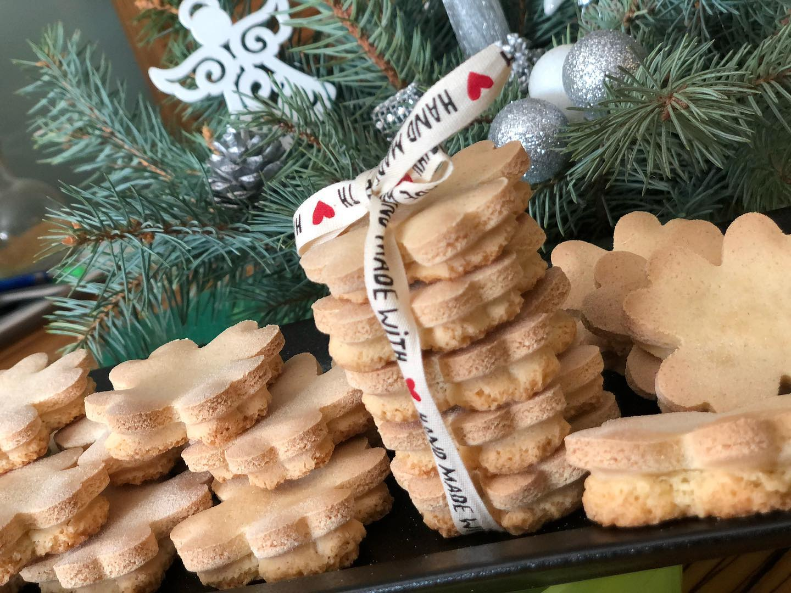

Zázvorníky podľa @jarusika — Normy Jedál
Zázvorníky #zazvorniky #mnam #vianoce #marrychristmas #sladkerecepty #dessert #vianocnepecenie #suchepecivo #bakery #backen #december #mnamky #dnespeciem #peceniejeradost #zdravoachutne #dumbierlekarsky #pecenieslaskou #pecenie #baking #vonavianoc #slovakia #laskanajazyku #foodphotography #sweet